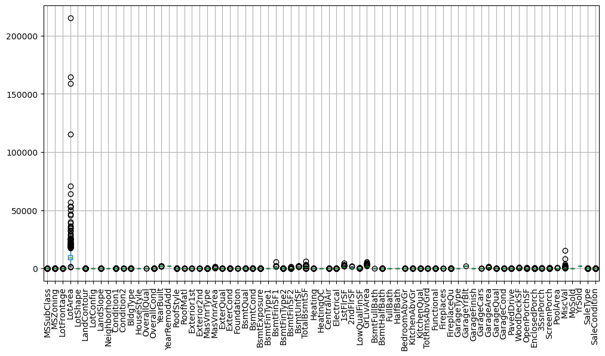
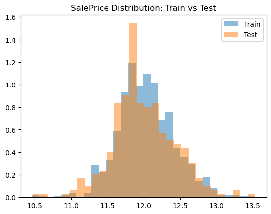
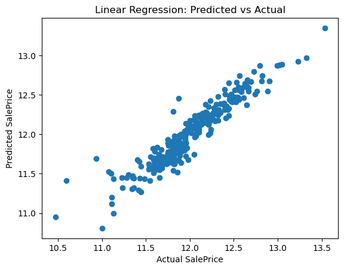
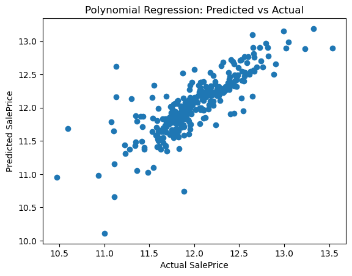
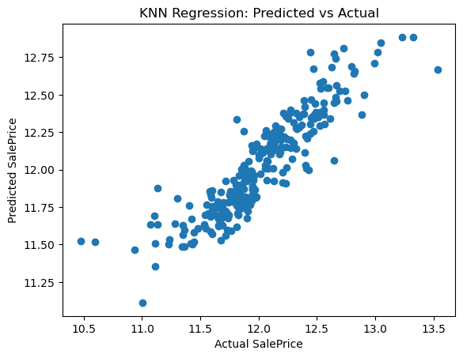

Case Study · Regression
🏡 Housing Price Prediction
Built and evaluated multiple machine learning regression models to predict house sale prices on the Ames Housing dataset. Compared Linear Regression, Polynomial Ridge Regression, and KNN, achieving a best R² score of 0.885.
The problem
Given 80 features about a house — lot size, quality ratings, year built, neighborhood, and so on — predict its sale price. This is the classic Kaggle Ames Housing dataset, a good stress test for regression because it mixes numeric, ordinal, and categorical data and has real missing values.
Approach
- Load and inspect: 1,460 rows, 81 columns. Checked types and missing values per column (e.g.
LotFrontagewas missing for 259 houses). - Preprocessing: encoded categorical columns to numeric, narrowed to 73 usable feature columns, confirmed zero remaining nulls before training.
- Scaling & split: scaled features and split 80/20 into train and test sets.
- Models compared: Linear Regression, Polynomial Regression (degree 2) with Ridge regularization, and K-Nearest Neighbors.
- Evaluation: MAE, MSE, and R² on the held-out test set for each model.


Results
| Model | MAE | MSE | R² |
|---|---|---|---|
| Linear Regression | 0.101 | 0.021 | 0.885 |
| KNN | 0.137 | 0.040 | 0.788 |
| Polynomial + Ridge (deg. 2) | 0.179 | 0.071 | 0.622 |
What I didn't expect: plain Linear Regression outperformed the degree-2 polynomial model even with Ridge regularization. My read: with 73 features, a degree-2 expansion creates a huge number of interaction terms, and Ridge's single global penalty wasn't enough to control that added complexity on this dataset size. Next time I'd try feature selection before the polynomial expansion, or a lower-degree/fewer-interaction version, rather than expanding all 73 features at once.



Key Achievements
- Built and evaluated three regression models for house price prediction.
- Performed preprocessing, feature encoding, scaling, and model evaluation.
- Achieved R² = 0.885 using Linear Regression.
- Compared multiple evaluation metrics including MAE, MSE, and R².
What I'd do next
- Try feature selection or dimensionality reduction before the polynomial expansion.
- Log-transform the skewed target more carefully and check residuals for the winning model.
- Try a tree-based model (Random Forest / Gradient Boosting) as a stronger baseline.
← Back to projects